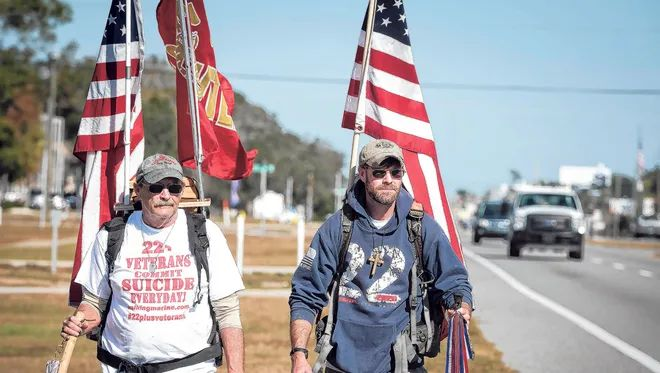

Rally Point
A Veteran’s Field Guide to Mental Health and Soul Restoration helps veterans navigate life after service through personal stories, mental health assessments, and biblical truth.
The 8-week, peer-to-peer curriculum was developed by a veteran, trained biblical counselor, and pastor at heart. Each veteran-led cohort becomes a brotherhood.